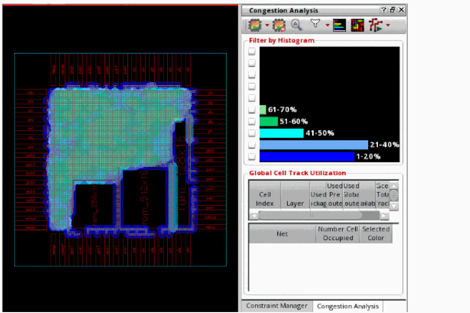
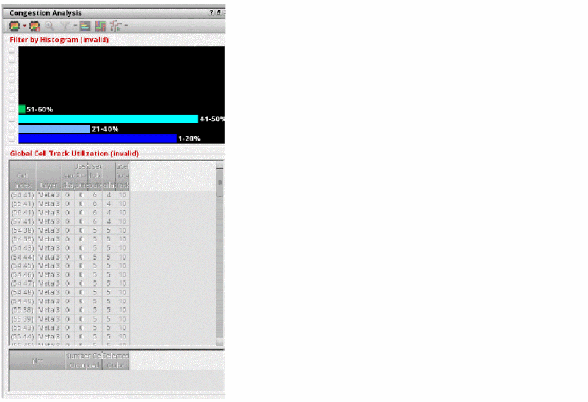

Running Global Routing and Congestion Analysis
Before visualizing the congestion data, run global routing and congestion analysis on the design data. To do this:
-
Click the Congestion Analysis icon
on the Congestion Analysis assistant toolbar.
Global routing and congestion analysis is run on the design. You can refer to the status and the results of congestion analysis in the CIW or review the data from the log.
The global router builds the gcell grid and then runs four passes of global routing in an attempt to route all the nets. Once routing is complete, you can see the number of routes passing through every gcell edge in the design. This information is then used to calculate the availability of each gcell and illustrate the availability of a gcell as a color on the heat map.
The following figure shows the congestion results displayed in the heat map and the histogram in the Congestion Analysis assistant.
When you modify an object in the design, such as a block, cell, soft block, or change the shape or placement of a virtual hierarchy, the data in the Congestion Analysis assistant is in an invalid state. In this state, a warning message is displayed informing you that the congestion analysis data is no longer valid because some of the routing objects have been modified.*WARNING* (IA-20500): The congestion analysis data is no longer valid because some of the routing objects have been modified. Click the Run Congestion Analysis button on the toolbar to regenerate the congestion data or click the Clear Congestion Analysis Data button on the toolbar to clear the congestion map.
In addition, histogram, Global Cell Track Utilization table and some of the congestion analysis assistant toolbar options are inactive.
In the Congestion Analysis toolbar only the first two options, Congestion Analyze and Clear Congestion Analysis Data are enabled.To get valid data and state, you need to re-run congestion analysis. Once congestion analysis is run again, histogram, Global Cell Track Utilization table and the toolbar options are enabled and restored. -
To clear the analysis results and delete global routing, click the Clear Congestion Analysis Data icon on the toolbar.
Related Topics
Return to top